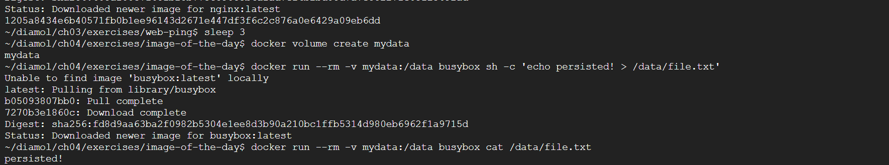
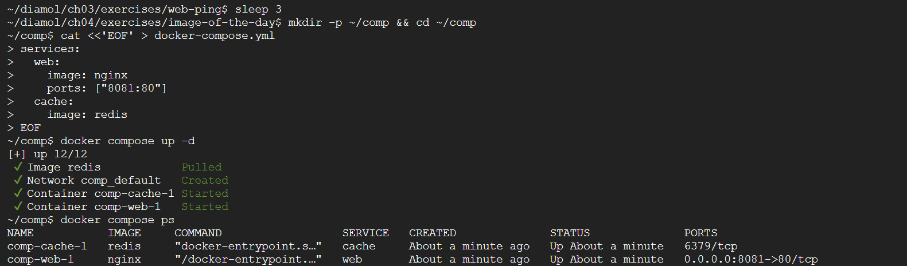

도커 레지스트리 · 볼륨 · 컴포즈
도커 두 번째 주차. 이미지를 레지스트리에 공유(Docker Hub·사설 registry), 볼륨/바인드 마운트로 데이터 보존, 도커 컴포즈로 다중 컨테이너 실행 순서로 실습한다.
이미지 참조 구조
이미지는 레지스트리/계정/리포지터리:태그 형태로 참조한다. 레지스트리를 생략하면 기본값 Docker Hub가 적용된다.
Docker Hub 푸시
docker login --username $dockerId # 허브 로그인($dockerId=계정명)
docker image tag image-gallery $dockerId/image-gallery:v1 # 계정명 포함 참조 부여
docker image push $dockerId/image-gallery:v1 # 레지스트리에 업로드
푸시 참조에는 푸시 권한을 가진 계정명이 포함돼야 한다.
docker login / push 결과
(실습 화면 캡처)
사설 레지스트리
docker container run -d -p 5000:5000 --restart always diamol/registry # 레지스트리 컨테이너 상주
hosts 파일에 도메인 별명 추가:
127.0.0.1 registry.local
docker image tag image-gallery registry.local:5000/gallery/ui:v1 # 사설 도메인 참조 부여
HTTPS가 아닌 레지스트리는 기본 거부되므로 데몬 설정에 허용 목록을 추가한다.
{
"insecure-registries" : ["registry.local:5000"]
}
docker info # 허용 목록 적용 확인
docker image push registry.local:5000/gallery/ui:v1 # 사설 레지스트리에 푸시
insecure-registries는 평문 통신을 허용하므로 실습·신뢰된 내부망에서만 사용한다.
사설 레지스트리 push 결과
(실습 화면 캡처)
태그 전략과 골든 이미지
하나의 이미지에 major.minor.patch와 latest를 조합해 붙인다. 운영은 재현성을 위해 정확한 버전(2.1.106), 개발은 latest를 함께 둔다. 공식 이미지를 조직 표준 베이스로 캡슐화한 것이 골든 이미지다.
컨테이너 데이터 휘발성
컨테이너 파일 시스템은 읽기 전용 이미지 레이어 위에 기록 가능 레이어가 얹힌 구조다. 변경은 기록 가능 레이어에만 쌓이고, 컨테이너를 삭제하면 함께 소멸한다.
docker container run --name rn1 diamol/ch06-random-number # 파일에 무작위 숫자 기록
docker container cp rn1:/random/number.txt number1.txt # 컨테이너 → 호스트 복사
cat number1.txt
docker container start --attach f1 # 재시작 시 다른 값 확인
유상태(stateful) 컴포넌트는 디스크 보존이 필요하므로 볼륨 같은 영속 스토리지를 쓴다.
볼륨
볼륨은 컨테이너와 독립된 생애주기를 갖는 스토리지다.
docker volume create todo-list # 볼륨 생성
docker container run -d -p 8011:80 -v todo-list:$target --name todo-v1 diamol/ch06-todo-list # 볼륨 연결 실행($target=내부 경로)
docker container run -d --name t3 --volumes-from todo1 diamol/ch06-todo-list # 기존 컨테이너 볼륨 공유
docker container exec todo2 ls /data # 공유 데이터 확인
Dockerfile에 VOLUME <target-directory>를 두면 컨테이너 실행 시 볼륨이 자동 생성된다.

▲ 볼륨에 쓴 파일을 다른 컨테이너에서 그대로 읽는다 — 컨테이너가 사라져도 볼륨의 데이터는 유지된다.
바인드 마운트
바인드 마운트는 호스트 디렉터리를 컨테이너에 직접 연결한다.
docker container run --mount type=bind,source=$source,target=$target -d -p 8012:80 diamol/ch06-todo-list # 호스트↔컨테이너 연결($source=호스트, $target=컨테이너)
docker container run --mount type=bind,source=$source,target=$target,readonly diamol/ch06-todo-list # 읽기 전용 연결
source에는 OS별 형식(윈도 c:\data, 리눅스 /data)에 맞는 절대경로를 넣는다.
도커 컴포즈
여러 컨테이너의 '원하는 상태'를 YAML에 기술하면 컴포즈가 컨테이너·네트워크·볼륨을 만든다.
version: '3.7'
services:
todo-web:
image: diamol/ch06-todo-list
ports:
- "8020:80"
networks:
- app-net
networks:
app-net:
external:
name: nat
docker network create nat # 컴포즈가 쓸 네트워크 생성
docker-compose up # 포그라운드 실행
docker-compose up --detach # 백그라운드 실행
docker-compose up -d --scale iotd=3 # iotd 서비스 3개로 스케일 아웃
docker-compose logs --tail=1 iotd # 각 컨테이너 로그 확인
docker-compose stop # 중지
docker-compose start # 시작
docker-compose down # 컨테이너·네트워크 제거
depends_on으로 시작 순서를, environment·secrets로 설정·비밀값을 주입한다. DB가 필요하면 서비스로 함께 정의한다.
services:
todo-db:
image: diamol/postgres:11.5
ports:
- "5433:5432"
todo-web:
image: diamol/ch06-todo-list
ports:
- "8020:80"

▲
docker compose up -d 한 번으로 web(nginx)·cache(redis) 두 컨테이너를 함께 띄운 모습(docker compose ps).
컨테이너 간 통신(내장 DNS)
도커 내장 DNS는 컨테이너 이름을 도메인 삼아 IP를 돌려준다. 스케일 아웃 시 모든 컨테이너 IP가 나온다.
docker container exec -it image-of-the-day_image-gallery_1 sh # 웹 컨테이너 셸 진입
nslookup accesslog # 서비스 이름으로 IP 조회
nslookup iotd # 스케일 아웃 시 다중 IP
대상이 컨테이너가 아니면 도커는 호스트로 요청을 넘겨 외부 IP를 조회한다.
nslookup 다중 IP 결과
(실습 화면 캡처)
막혔던 점
- 사설 레지스트리 push에서 HTTP/HTTPS 오류 → 데몬 설정에
"insecure-registries":["registry.local:5000"]추가 후 도커 재시작,docker info로 확인. - hosts 수정 권한 거부 /
docker login실패 → 윈도는 관리자 권한, 리눅스는sudo로 수정. 로그인은 계정명 대소문자 정확히. - 볼륨 누락으로 데이터 소멸 / 바인드 마운트 경로 오류 →
-v 볼륨명:경로연결,source는 절대경로. - 컨테이너 이름 통신 실패 /
down후 재기동 실패 → 같은 네트워크(nat)에 묶고, 컴포즈는 같은 YAML이 있는 디렉터리에서 실행.